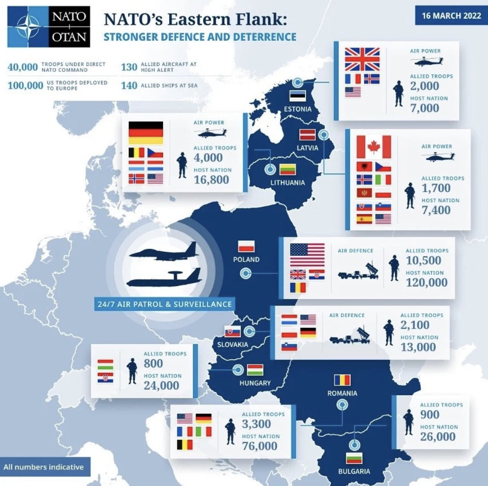

Rusko–Ukrajina: ztráty, technika, scénáře a východní křídlo NATO
Nezávislá analytická syntéza dostupných dat k říjnu 2026 — bez propagandy jedné či druhé strany, s explicitním rozptylem odhadů a jejich zdroji. Připraveno jako pracovní dokument, ne jako předpověď.
Co se změnilo za posledních 24 hodin
Stav k 7. 10. 2026. Fronta se za poslední den podstatně nepohnula: ISW neeviduje žádné významné ověřené ruské územní zisky. Válka se dál přesouvá do týlu – ukrajinské údery na ruskou energetiku a ruské útoky na mosty a infrastrukturu ukrajinských měst.

Fronta
Podle hodnocení ISW z 6. října ruské jednotky pokračovaly v útocích v Charkovské oblasti u Velykého Burluku a Kupjansku-Vuzlovyj a na lymanském směru, ale bez potvrzených postupů. Nejvyšší ruské útočné tempo zůstává na dobropilském směru, kde jsou ruské síly stále zhruba pět a půl kilometru od svých klíčových cílů. V západní části Záporožské oblasti u Orichivu ukrajinské jednotky podle ISW buď postoupily, nebo udržely pozice.
Údery a protivzdušná obrana
V noci z 5. na 6. října vyslalo Rusko 137 dronů, ukrajinská PVO jich podle vlastních údajů sestřelila 114. Rusko rozšiřuje údery na mosty ve městech – zasažen byl přechod přes Dněpr v Záporoží s cílem narušit logistiku i běžný život. Ukrajinská strana pokračuje v úderech na ruskou energetiku a vojenský průmysl, mimo jiné na strojírenský závod ve Snižném v okupované Doněcké oblasti, zhruba 90 km za frontou. ISW zároveň uvádí, že kombinace výpadků rafinérií a nižších příjmů z ropy a plynu tlačí Moskvu k výraznému navýšení nákupů deviz a zlata.
Ztráty podle ukrajinského generálního štábu
K 6. říjnu uvádí generální štáb kumulativně přibližně 1 544 260 ruských ztrát na osobách (+1 540 za den) a 12 396 tanků. Za září hlásil generální štáb rekordních zhruba 46 tisíc ruských ztrát, nejvíce v roce 2026. Jde o údaje strany konfliktu, nezávisle neověřené.
Zdroje: ISW – Russian Offensive Campaign Assessment, 6. 10. 2026, Ministerstvo obrany Ukrajiny / generální štáb, 6. 10. 2026, United24 Media (zářijové ztráty). Zdroje z X a YouTube se v tomto běhu nepodařilo načíst.
Archiv denních sitrepů
- 7. 10. 2026 – fronta bez větších změn, údery na mosty a energetiku
Proč se čísla tak liší
Ani Kyjev, ani Moskva nezveřejňují ověřitelná průběžná data o vlastních ztrátách. Existují tři typy zdrojů s odlišnou spolehlivostí a odlišným zkreslením:
Kumulativní ztráty, únor 2022 – říjen 2026
Rozptyl odhadů je enormní. Uvádíme rozsah napříč nezávislými zdroji s jasným určením typu čísla (padlí / celkové ztráty vč. raněných a nezvěstných).
🇷🇺 Rusko
| Kategorie | Odhad | Zdroj | Spolehlivost |
|---|---|---|---|
| Padlí (jmenovitě ověřeno) | ~259 000 (k 21.9.2026) | Mediazona / BBC | dolní mez |
| Padlí (statistický odhad z registru dědických řízení) | ~352 000 (do konce 2025) | Mediazona / Meduza | střední |
| Padlí (GCHQ odhad) | téměř 500 000 (k 28.5.2026) | Defense News / GCHQ | horní mez |
| Padlí (CSIS) | až 450 000 (2/2022–6/2026) | CSIS | horní mez |
| Celkové ztráty (K+W+MIA) | ~1,4 milionu (2/2022–6/2026) | CSIS | modelový odhad |
| Celkové ztráty (ukr. gen. štáb) | ~1 544 000 (k 6.10.2026) | MO Ukrajiny / GŠ | strana konfliktu |
| Tempo ztrát 2026 | ~36 300/měsíc (leden–září celkem ~326 900; září 46 230 = rekord roku) | United24 / GŠ | strana konfliktu |
🇺🇦 Ukrajina
| Kategorie | Odhad | Zdroj | Spolehlivost |
|---|---|---|---|
| Padlí (oficiálně, Zelenskyj) | 55 000 (únor 2026) | Al Jazeera | dolní mez, přiznaně neúplné |
| Padlí (jmenovitě, UALosses) | ~103 400 (+ ~97 900 nezvěstných; data do 21.6.2026) | UALosses | otevřený zdroj |
| Padlí (CSIS) | 125 000–150 000 (2/2022–6/2026) | CSIS | modelový odhad |
| Nezvěstní (MIA) | 84 568 (duben 2025) | Russia Matters | koordinační centrála UA |
| Zajatí (vráceno od 2022) | 9 716 osob / 76+ výměn | United24 Media | potvrzené počty |
| Celkové ztráty (K+W+MIA) | 525 000–625 000 (2/2022–6/2026) | CSIS (via Russia Matters) | západní odhad |
Poznámka k zajatým/nezvěstným: kategorie se průběžně přelévají — 24.8.2026 se vrátilo 10 vojáků vedených jako nezvěstní od let 2024–2025, teprve při výměně se ukázalo, že byli v zajetí. Skutečný počet Ukrajinců stále držených v ruském zajetí není veřejně známý. Zdroj: Euromaidan Press.
Poměr ztrát a civilní oběti
Zdroje poměru a dronů: CSIS (1. 7. 2026), United24 Media.
Zdroje: OSN Ukrajina / HRMMU (14. 7. 2026), UNN – měsíční zpráva HRMMU za srpen (19. 9. 2026).
Co tvrdí ruská strana o ukrajinských ztrátách
Explicitně uvádíme i tato čísla — jde ale o needěřitelný, propagandistický zdroj, sloužící primárně jako informační nástroj, ne jako fakt. Zařazeno pro úplnost a kontrast.
| Zdroj | Tvrzení | Nezávislé posouzení |
|---|---|---|
| Ruské MO, ministr Andrej Belousov (prosinec 2025) | ~500 000 ztrát UA jen za rok 2025 + 103 000 kusů techniky | nepodloženoVerstka |
| Ruský generální štáb (počátek 2026) | 1,5 milionu ztrát UA celkem od 2022 | označeno za dezinformaciEUvsDisinfo |
| Proruský hacktivismus (srpen 2025) | 1,7 milionu ztrát UA (údajně z "uniklých dokumentů") | vyvrácenoEuronews ověřování |
Ruská technika ztracená dle ukrajinského generálního štábu
Kumulativně k 6. 10. 2026. Ukrajinský zdroj — brát s rezervou, ale trend (masivní úbytek) potvrzují i nezávislé zdroje (Foreign Affairs/Kofman, Oryx metodika).
| Kategorie | Počet | Denní přírůstek (6.10.) |
|---|---|---|
| Tanky | 12 396 | +3 |
| Obrněná bojová vozidla | 25 494 | +7 |
| Dělostřelecké systémy | 50 785 | +52 |
| MLRS (raketomety) | 2 184 | +2 |
| Systémy PVO | 1 688 | — |
| Letadla | 443 | — |
Zdroj: Ministerstvo obrany Ukrajiny / generální štáb.
Nezávislé křížové odhady
Efektivita ruských ofenziv klesá
Zdroj: Mick Ryan, Futura Doctrina (na základě dat Russia Matters a ukrajinského generálního štábu).
Ukrajinské ztráty techniky
Ukrajina na rozdíl od Ruska tato data průběžně nezveřejňuje (operační bezpečnost). Nezávislé odhady existují jen fragmentárně a nejsou v tomto dokumentu prezentovány jako srovnatelně spolehlivé.
Kdo dřív dojde síly?
Možná důležitější metrika než kumulativní ztráty — ukazuje, která strana je blíž vyčerpání personální základny.
Zdroj: Zelenskyj / Kyiv Independent (Yahoo). Rusko navíc plánuje odvod 160 000 branců na povinnou službu — největší odvodová kampaň za 14 let.
Novější srovnání: podle Dmitrije Medveděva podepsalo za první pololetí 2026 smlouvu s armádou necelých 200 000 lidí (cíl na celý rok 409 000), tedy zhruba 33 000 měsíčně. Ukrajinský generální štáb ve stejném období vykázal přibližně 196 000 ruských ztrát a ve třetím čtvrtletí jejich tempo vzrostlo na 42–46 tisíc měsíčně. Pokud obě řady čísel alespoň přibližně platí, nábor od léta ztráty nepokrývá. Obě čísla ale pocházejí od stran konfliktu.
Zdroje: Kyiv Post (nábor 2026), United24 (měsíční ztráty).
🇷🇺 Rusko — charakteristika
Vyhýbá se druhé vlně nepopulární mobilizace (po zářijové 2022, kdy uprchlo přes 261 000 Rusů) — spoléhá na finanční pobídky a vězeňské amnestie.
🇺🇦 Ukrajina — charakteristika
Problém není primárně demografický, ale strukturální: akutní nedostatek personálu na frontě, snížený počet dobrovolníků, únava dlouhosloužících vojáků, rekordní míra svévolného opuštění jednotky a rostoucí veřejná nevole vůči mobilizaci. Program pro 18–24leté dobrovolníky nepřinesl významný objem nových rekrutů. Carnegie to označuje spíš jako „krizi důvěry" než kolaps vůle bojovat — lidé se bojí, že mobilizace je jednosměrná cesta. Reforma z června 2026 zavádí pevné kontrakty místo neomezené služby a slibuje postupné propouštění nejdéle sloužících vojáků; ministerstvo obrany ohlásilo, že propouštění vojáků sloužících od let 2014 a 2022 má začít do konce roku 2026, spolu se zvýšením základního žoldu z 20 000 na 30 000 hřiven. Praktická realizace zatím nebyla potvrzena.
Zdroje: Carnegie, FDD, IISS Military Balance, PRM.ua.
Palivo pro válku dochází — pomalu
Ruská ekonomika podle většiny analýz nesměřuje k náhlému kolapsu, ale k pomalému, vyčerpávajícímu úpadku s ubývajícími rezervami. Stát má nástroje (škrty sociálních výdajů, nucené úvěrování státními bankami, tisk peněz, čerpání rezerv), ale ty nejsou nekonečné. Návrh rozpočtu na 2027–2029 předložený Dumě 30. září 2026 přitom ukazuje, že Kreml s útlumem války nepočítá: výdaje na obranu mají v roce 2027 vzrůst na rekordních 17,1 bilionu rublů, financované vyšším zadlužením a novými daněmi. Paradoxně by i konec bojů v Ukrajině mohl krátkodobě zvýšit riziko recese — snížením výstupu ve zbrojním průmyslu a poklesem příjmů domácností závislých na vojenských výplatách.
Zdroje: OSW Centre for Eastern Studies, Moscow Times, EUvsDisinfo, Veritas Europaea, Defense News / Reuters (28. 9. 2026), Meduza (30. 9. 2026), TASS / MF RF (FNB k 1. 9. 2026), NV (prognóza HDP).
Kolik toho Rusko zvládne obnovit — a jak rychle
Rusko současně vede válku a přezbrojuje se pro budoucí konflikt. Carnegie ale varuje, že při pokračování tempa ztrát z roku 2024 hrozí vyčerpání sovětských skladových zásob u některých typů techniky možná už v roce 2026 — většina nasazované techniky je repasovaná, kvalitativně horší než nová. Atlantic Council cituje analytiky, podle nichž tempo ruské vojenské obnovy už teď předčí západní očekávání.
Zdroje: Milwaukee Independent / ISW, ECFR, RAND, Carnegie, Atlantic Council, The War Zone.
Stručná časová osa
| Období | Událost |
|---|---|
| 2022 | Homyel (Bělorusko) a Istanbul — první kola jednání, bez dohody. |
| 2023–2024 | Kodaň, Džidda, Švýcarsko — ukrajinský "mírový vzorec", komuniké o jaderné bezpečnosti a výměnách zajatců, žádný postup k příměří. |
| srpen 2025 | Summit na Aljašce — klíčový referenční bod pro další jednání. |
| prosinec 2025 | Po jednání s Trumpem Zelenskyj uvádí, že je dohodnuto "90 % potenciální mírové dohody" — otázka území zůstává hlavní překážkou. |
| únor 2026 | USA tlačí na uzavření dohody do června; jednání v Miami. |
| březen 2026 | Rusko zvažuje přerušení jednání, pokud Ukrajina neustoupí z Doněcké oblasti. |
| 11.–12. dubna 2026 | Krátké 32hodinové příměří o velikonocích, iniciativa Zelenského. |
| 2026, průběžně | Výměny zajatců pokračují jako jediný funkční mechanismus i přes zablokovaná jednání o území a příměří. |
| 25. srpna 2026 | Ředitel CIA John Ratcliffe neohlášeně navštívil Moskvu — první cesta šéfa CIA do Ruska od roku 2021 (tehdy William Burns). Cestoval přes Rigu vojenským letounem C-17, jednal s ruskými protějšky (dle Kremlu včetně šéfa SVR Naryškina). Trump označil návštěvu za "rutinní"/"polo-rutinní" snahu o ukončení války; USA požádaly Ukrajinu, aby po dobu návštěvy (po–st) pozastavila útoky na Moskvu a severní Rusko. |
| 5.–6. září 2026 | Zmocněnci Steve Witkoff a Jared Kushner jednají v Moskvě a poprvé za války navštěvují Kyjev. Obě strany po dobu návštěv pozastavily údery na hlavní města; konkrétní průlom žádný, Kreml „nevylučuje“ obnovení trojstranného formátu. |
| 13. září 2026 | Peskov připouští trojstranná jednání „předpokládaně v říjnu“; hostitelství nabízí Turecko i SAE. Termín nestanoven. |
| 25. září 2026 | Zelenskyj: USA navrhly trojstranné jednání na technické úrovni v SAE (mj. o energetickém příměří a plavbě). Poslední trojstranné kolo proběhlo v únoru 2026 v Abú Zabí. |
Zdroje: Washington Post, Axios, CNN, CBS News, Washington Times, HotAir — analýza spekulací, NPR, Reuters (Global Banking & Finance), Türkiye Today, Censor.net.
Tři cesty vpřed
🟢 Optimistický
Vyčerpání dřív než kolaps · nízká–střední pravděpodobnost- Vojensky: poměr ztrát dál v neprospěch Ruska, ofenzivy dál ztrácejí efektivitu, sovětské zásoby techniky se vyčerpávají rychleji než nová produkce nabíhá.
- Ekonomicky: rozpočtový deficit se prohlubuje, rezervní fond na pokraji vyčerpání, Kreml vyjednává z pozice slabosti.
- Politicky: ReArm Europe (840 mld. USD) dotažen do funkční kapacity, evropská soudržnost kompenzuje americké stažení, Čína pod tlakem omezuje dual-use export.
- Výsledek: příměří blízké současné linii bez uznání anexí, Rusko příliš oslabené na riziko konfliktu s NATO 5+ let.
🟡 Neutrální
Zamrzlý konflikt · nejpravděpodobnější dle většiny institucí- Vojensky: poziční válka pokračuje 1–3 roky, nebo vynucené příměří korejského typu bez mírové smlouvy.
- Personálně/ekonomicky: obě strany v chronickém, ne kolabujícím napětí; Rusko pomalu, ale ne náhle chudne.
- USA: pokračující postupné stahování se z role garanta bez úplného opuštění Ukrajiny.
- Evropa: přezbrojení pokračuje nerovnoměrně — Maďarsko/Slovensko/Bulharsko brzdí konsenzus, plná odstrašující kapacita přijde kolem 2029–2030.
- Výsledek: ani mír, ani eskalace do NATO — dlouhé provizorium s periodickými krizemi důvěry.
🔴 Pesimistický
Okno zranitelnosti · nejméně pravděpodobný, nejzávažnější- Mechanismus: příměří v Ukrajině + rychlá ruská rekonstituce (6–18 měsíců) + výrazný rozpad jednoty NATO — "perfektní bouře" dle ECFR.
- USA: opakování krize z března 2025 (pozastavení pomoci), tentokrát trvalejší; oslabení primární odstrašující funkce aliance.
- Rusko: rekonstituce rychlejší, než Západ čeká; může budovat sílu nad rámec předválečného stavu kvůli rozšíření NATO o Finsko a Švédsko.
- Cíl testu: Pobaltí — nejnepříznivější poměr sil, chybí strategická hloubka.
- Akcelerátor: souběžná krize (Tchaj-wan, Blízký východ) odčerpává americkou pozornost v kritickém okamžiku.
Klíčové proměnné rozhodující směr: tempo evropského přezbrojení · míra americké angažovanosti · ochota Číny omezit dual-use export · skutečná rychlost vyčerpání ruských zásob techniky.
Stav, zranitelnosti, plány
Mapa — nasazení NATO na východním křídle

Země podle detailu
🇵🇱 Polsko
4,68 % HDP (2026)Program East Shield — 2,5 mld. USD, 700 km hranice s Ruskem/Běloruskem. Plán zdvojnásobit armádu na 300 000 vojáků.
🇨🇿 Česko
přes 2 % HDP (2026)Cíl 3 % do 2030. Rozpočet 2026 nižší, než plánovala předchozí vláda (2,35 %) — Babišova vláda škrtá přímé financování Ukrajiny, ponechává donorskou muniční iniciativu. Pro rok 2027 vláda ohlásila navýšení o 36 mld. Kč na zhruba 190 mld. Kč, tedy podle vládní metodiky poprvé 2 % HDP (NATO, které počítá širší okruh výdajů, odhaduje Česko už pro rok 2026 nad 2 %); priority jsou protivzdušná a protidronová obrana, nábor a brigáda pro NATO (Expats.cz).
🇸🇰 Slovensko
~2,2 % HDP"Schizofrenie" zahraniční politiky: hostí NATO bojovou skupinu a jedná o hlídkování baltského nebe, zatímco premiér Fico opakovaně navštěvuje Moskvu.
🇭🇺 Maďarsko
politický zlomDuben 2026: konec 16letého vládnutí Orbána. Nový premiér Péter Magyar (Tisza) obrací kurz ke konstruktivní spolupráci s EU/NATO.
🇷🇴 Rumunsko
rostoucí650 km hranice s Ukrajinou, desítky narušení vzdušného prostoru drony. Plynové pole Neptun Deep (těžba od 2027) jako strategický cíl ochrany.
🇧🇬 Bulharsko
~2 % HDPSpolupráce s Rumunskem a Tureckem na obraně proti plovoucím minám v Černém moři.
🇪🇪 Estonsko
5,1 % HDP (2026)576 mil. USD na vojenskou infrastrukturu 2025–2028. Nová základna Camp Reedo — první od obnovení nezávislosti.
🇱🇻 Lotyšsko
4,92 % HDP (2026)115 mil. USD na infrastrukturu 2025. Znovuzavedena branná povinnost.
🇱🇹 Litva
5,33 % HDP (2026)1,2 mld. USD na zázemí pro spojenecké jednotky (dokončení 2027). Aktivována německá 45. tanková brigáda.
🇫🇮 Finsko
vysoké, roste830 mil. hranice s Ruskem — po vstupu do NATO zdvojnásobila délku hranice aliance. Nová bojová skupina FLF Finland (6/2026), rámcový stát Švédsko.
🇸🇪 Švédsko
rámcový stát FLFVelí bojové skupině FLF Finland (600–1 200 vojáků). Posílená obrana ostrova Gotland jako strategická opora Baltského moře.
Podíly výdajů na obranu u Polska, Pobaltí a Česka: odhady NATO pro rok 2026 (Reuters / Al-Monitor, 7. 7. 2026). U ostatních zemí jde o starší údaje z původní verze dokumentu.
Souhrn zranitelností
- Suwalská mezera — nejcitovanější geografická slabina (Polsko + Pobaltí).
- Politická fragmentace — Slovensko zůstává hlavní brzdou konsenzu i po pádu Orbána v Maďarsku.
- Nerovnoměrné tempo přezbrojení — Pobaltí a Polsko investují nejvíc relativně k HDP, Česko postupuje výrazně opatrněji.
- Nejistota ohledně USA — opakovaně citovaný faktor napříč zdroji nutící státy plánovat "pro případ" oslabení americké záruky.
- Černé moře jako druhá fronta — Rumunsko a Bulharsko čelí hybridním hrozbám souběžně s pevninskou hrozbou na severu.
- Drony nad územím NATO — 1. 9. 2026 Berlín oficiálně přičetl Rusku pokus o dronový útok s výbušninou na letišti Lipsko/Halle (srpen 2026) a 15. 9. 2026 sestřelily italské Eurofightery ozbrojený dron, který z Běloruska pronikl nad Litvu. Další narušení hlásí Rumunsko a Lotyšsko.
Zdroje: Euronews (Lipsko), Stars and Stripes (Litva), Grosswald – průběžný přehled incidentů.
Kompletní seznam odkazů
Instituce, zpravodajství a živé OSINT sledovací účty na X/Twitter použité v této syntéze. Doporučeno ověřovat čísla napříč více zdroji vždy, ne spoléhat na jeden.
📡 OSINT sledovací účty (X / Twitter)
🏛️ Instituce a think-tanky
- CSIS — Russian Blood and Treasure
- Russia Matters — War Report Card
- Russia Matters — Losing more than recruiting?
- RAND — Russian Military Reconstitution
- Carnegie — Reconstitution 2030 Pathways
- Carnegie — Ukraine's Manpower Challenge
- Carnegie — Baltic States
- Carnegie — Central Europe's Russia Policy
- ECFR — The Ticking Clock
- ECFR — China's Support for Russia
- Atlantic Council — NATO-Russia Dynamics
- IISS — Attrition and Adaptation
- IISS — Fortifying NATO's Eastern Flank
- Belfer Center — Russian Threats to Eastern Flank
- Heritage Foundation — Russia
- Foreign Affairs — The Next Russia Threat
- OSW — Russia's 2026 Budget
- Bruegel — Russian Economy Resilience
- CEPA — Wartime Assistance to Ukraine
📰 Zpravodajství a datové projekty
- Mediazona — Russian Losses (jmenovitý tracker)
- Minfin.index — ukrajinský GŠ, denní data
- Kyiv Independent
- CNN — Bloodier than Stalingrad
- Mediazona / Meduza — statistický odhad ruských padlých (květen 2026)
- UALosses — jmenovitý seznam ukrajinských padlých
- Oryx — vizuálně doložené ztráty techniky
- LiveUAmap — interaktivní mapa fronty
- United24 Media
- Euromaidan Press
- Verstka — jak ruské MO reportuje
- EUvsDisinfo — fact-check 1,5M
- Euronews — ověření 1,7M claimu
- Moscow Times — ruská ekonomika 2026